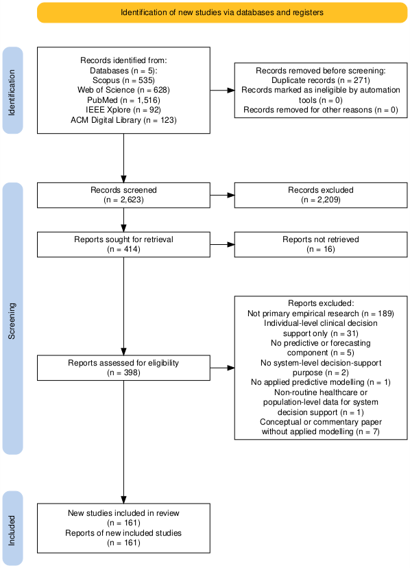
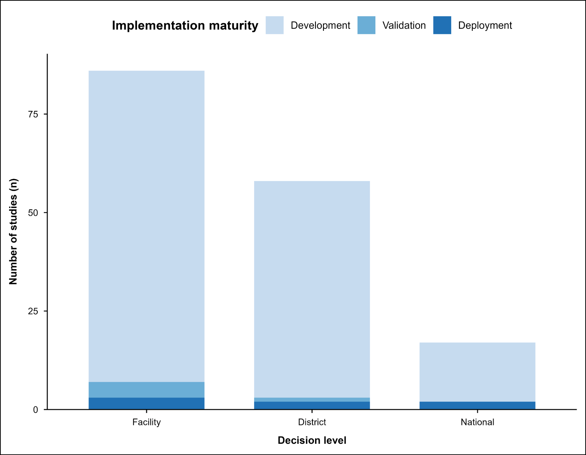
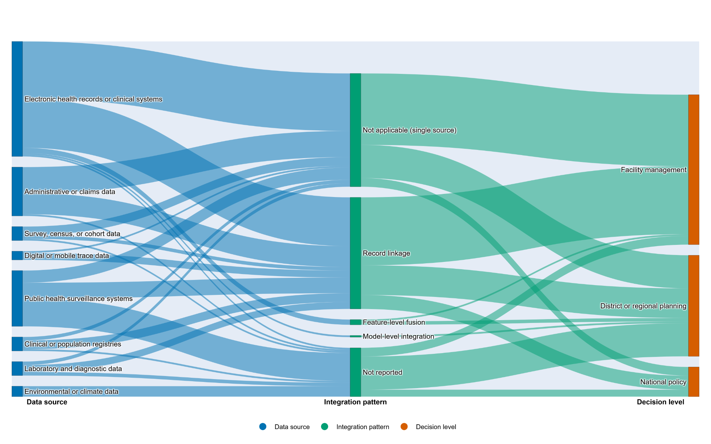

Overall aim
To examine how predictive analytics applied to longitudinal population and routine health data can generate interpretable, decision-relevant insights and support their translation into health-system planning in resource-limited settings.
This research examines how predictive analytics using routine and population health data can move beyond model development and become usable decision support for health-system planning in resource-limited settings.
To examine how predictive analytics applied to longitudinal population and routine health data can generate interpretable, decision-relevant insights and support their translation into health-system planning in resource-limited settings.
How can predictive analytics using longitudinal population and routine health data be developed and translated into actionable insights for health-system planning and decision-making in resource-limited settings?
Identify how predictive analytics has been used with routine and population health data for health-system decision support.
Assess implementation maturity, data integration, governance, uncertainty reporting and decision pathways.
Use stakeholder engagement, Navrongo HDSS data, predictive modelling and forecasting to develop planning-relevant insights.
Predictive analytics studies are expanding rapidly, but most remain disconnected from routine planning workflows, governance structures and accountability mechanisms.
Predictive models can appear advanced while still failing to support real decisions. Health-system value depends on whether outputs are interpretable, trusted, connected to planning questions and embedded within decision processes.
Engage health-system actors to identify decision-relevant case studies and planning questions.
Use longitudinal Navrongo HDSS data to construct analysis-ready population, household and time-aligned datasets.
Compare statistical and machine-learning approaches, with attention to validation, uncertainty and interpretability.
Interpret outputs with stakeholders to assess usability, barriers, enablers and planning relevance.
The project shifts the question from “Can we build predictive models?” to “How can predictive outputs become usable, accountable and context-sensitive decision-support for health-system planning?”



This digital companion page is designed as a focused extension of the poster. It highlights the evidence most relevant to the poster argument: rapid growth in predictive analytics, limited implementation maturity, weak decision pathways and the need for stakeholder-informed decision support.
Detailed supplementary tables and manuscript materials can be shared separately where appropriate. This page remains visual, selective and easy to navigate.
The review examined whether studies used single or multiple data sources and how data linkage or integration was described. This matters because decision support depends on trustworthy data architecture, not only modelling technique.
The review assessed reporting of governance, privacy protection, uncertainty, missing data and calibration. These features shape whether predictive outputs can be trusted and responsibly used.
The review mapped whether models were positioned for facility management, district or regional planning, or national policy. This helped define the research gap and the next empirical phase of the PhD.
A2 landscape poster summarising the project aim, completed scoping review deliverable, research gap and empirical design.
Postgraduate Researcher
University of East Anglia
South and East Network for Social Sciences (SENSS) Annual Conference
Email: w.dormechele@uea.ac.uk
ORCID: 0000-0003-4041-2555
Google Scholar: View profile
This PhD project is supervised at the University of East Anglia. I gratefully acknowledge the guidance of my supervisory team, including Dr Pinar Guven-Uslu and Prof Beatriz De La Iglesia, and the support of SENSS.
Supervisors are acknowledged for academic guidance; the poster and digital companion page are presented by William Dormechele for the SENSS Annual Conference poster competition.
This page shares a poster summary and non-confidential research outputs only. It does not include raw HDSS data, identifiable information, stakeholder transcripts, ethics documents or confidential governance materials.